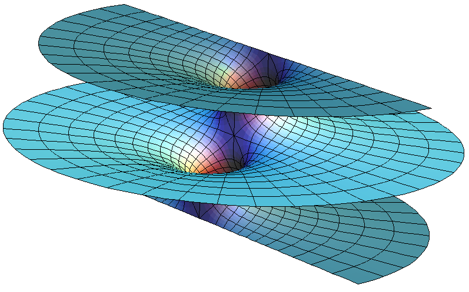

☰
+
-
1
A partly topological introduction
❯
1.1 A few words about rational functions
1.2 Topology
1.3 Compactification
1.4 Projective spaces
2
Algebra and geometry
❯
2.1 Algebraic sets
2.2 Irreducible components
2.3 Primary decomposition
2.4 Computation
2.5 The Hilbert Nullstellensatz
2.6 The combinatorial Nullstellensatz
3
Affine algebraic curves
❯
3.1 Intersection of two plane curves
3.2 Rational functions and local rings
3.3 Dimension in local rings
3.4 The crucial isomorphism
4
Projective plane curves
❯
4.1 Rational functions on the projective plane
4.2 Homogeneous polynomials with no common factors
4.3 Projective transformations
4.4 Invariance under projective transformations
4.5 Statement and proof of Bezout
4.6 Some more local algebra and local geometry
4.7 Max Noether's theorem
4.8 Elliptic curves
4.9 Fun and surprising facts
A
Basic algebra
❯
A.1 Commutative rings
A.2 Local rings
E
Mandatory exercises AC25
❯
R
References
❯
Algebraic Curves
Niels Lauritzen
